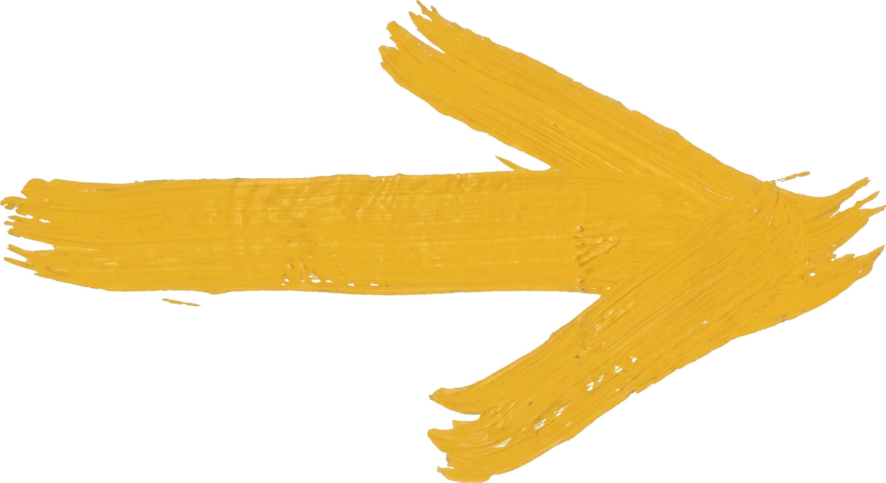

Protótipo de teste — recriação limpa (HTML/CSS + um pouco de JS pro parallax, sem dependência de ferramenta de design) do handoff em ../design_handoff_hero_section/. Role a página pra ver o parallax. Não é código de produção do site Next.js.

Felipe MunizEsta seção existe só para dar altura de rolagem neste teste.
No site real, aqui viria o bloco Próximas saídas.